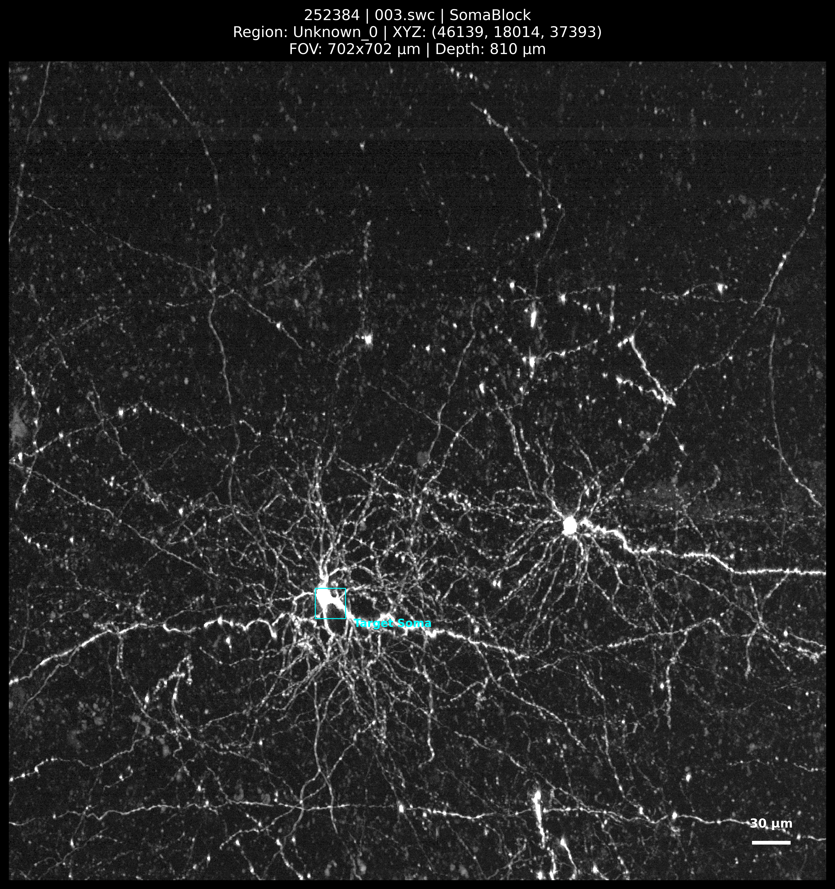
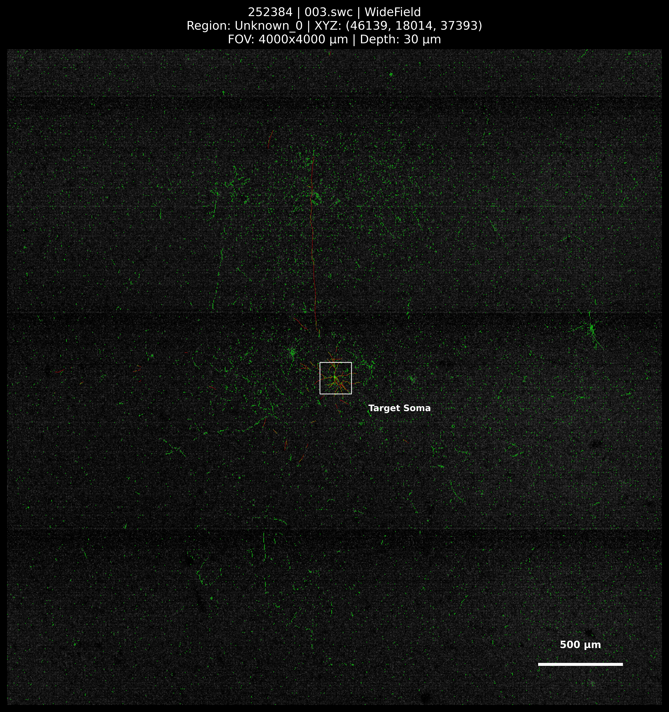
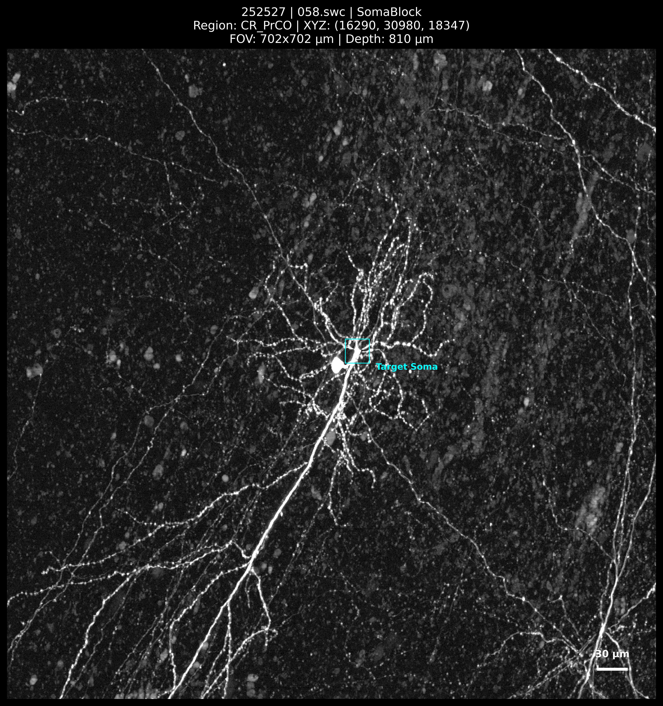
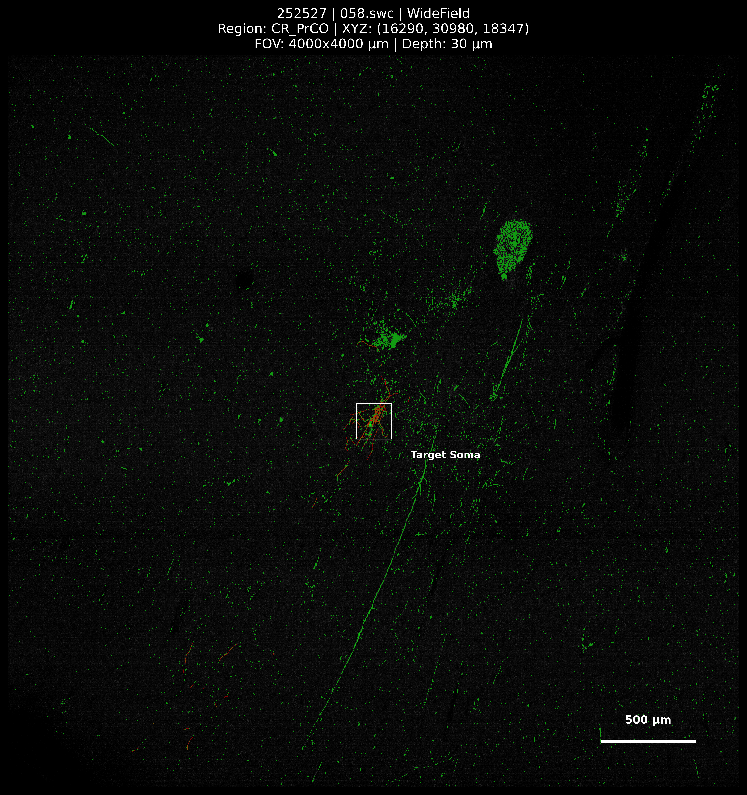
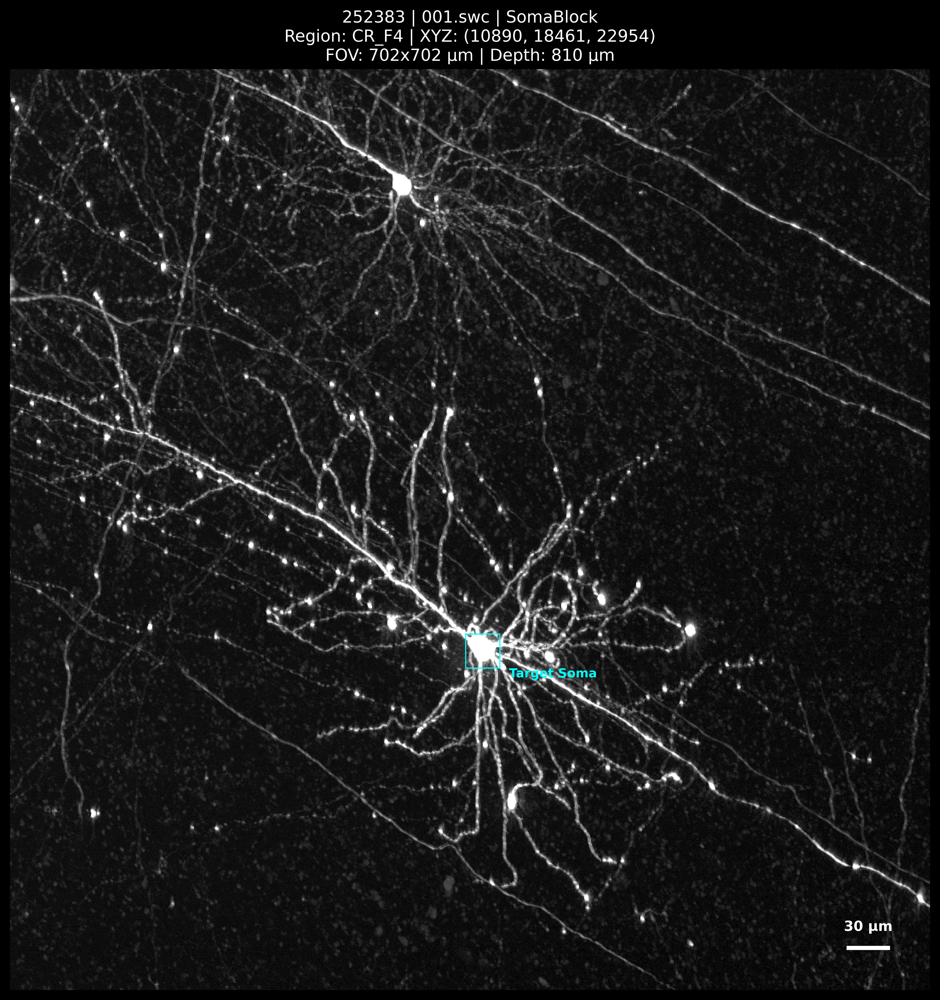
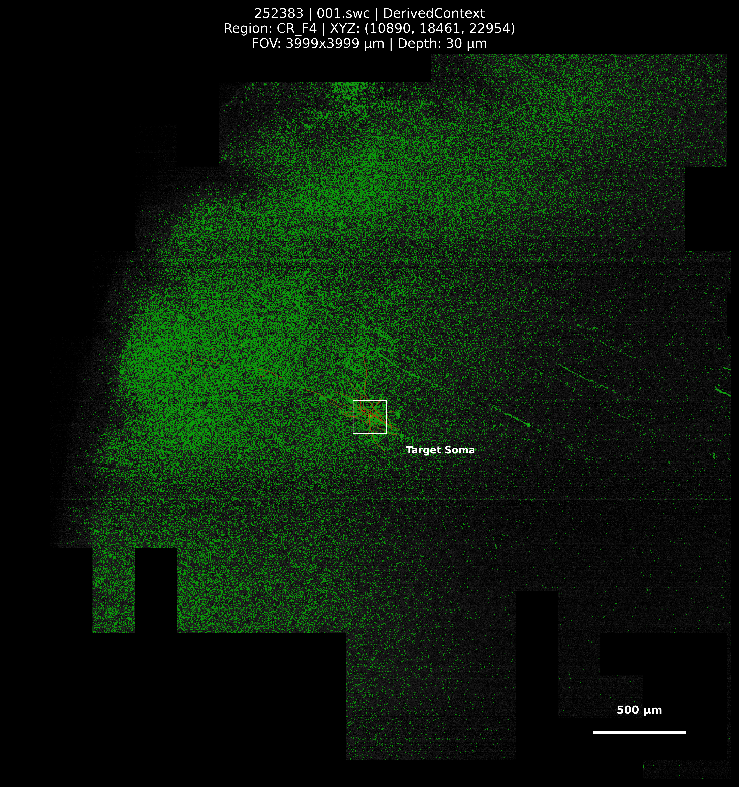

252384 / 003.swc
Source label: Unknown_0. Alignment is not accepted by rendering.


Primary soma and wide-field views. Partial derived contexts are labelled separately. Original bulk files are unchanged.
Source label: Unknown_0. Alignment is not accepted by rendering.


Source label: CR_PrCO. Alignment is not accepted by rendering.


Source label: CR_F4. Alignment is not accepted by rendering.

